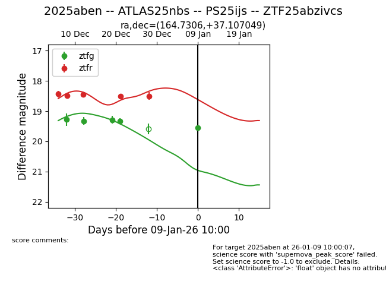
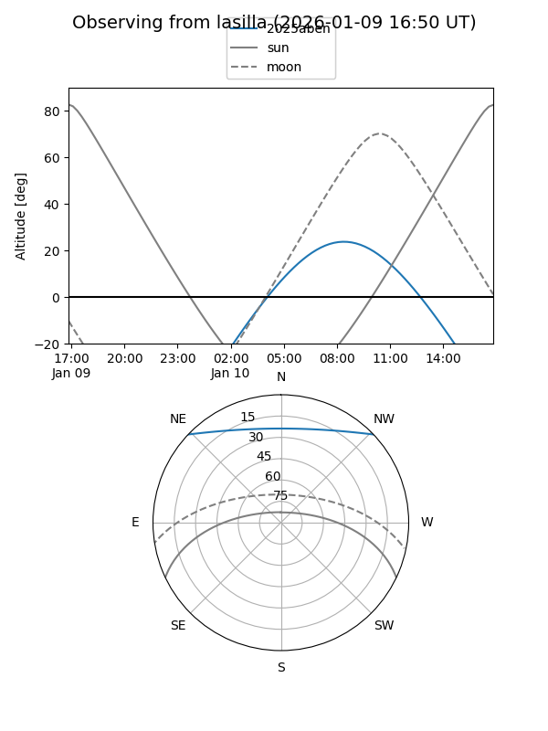
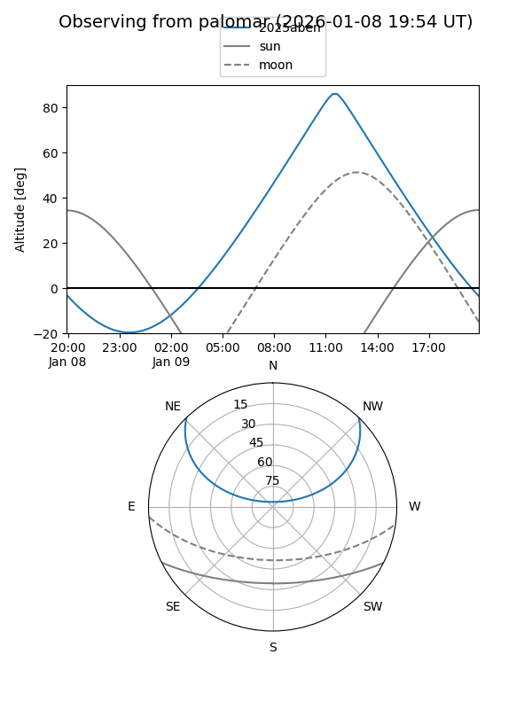
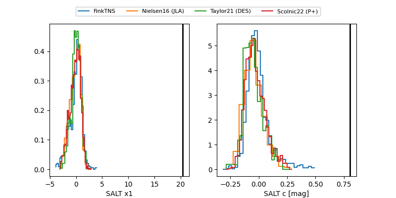

2025aben
Target 2025aben at 2026-01-09 10:01
Aliases and brokers:
FINK:
Lasair:
ALeRCE:
TNS:
YSE:
alt names
ZTF25abzivcs (ztf,fink_ztf)
2025aben (tns,yse)
ATLAS25nbs (atlas)
PS25ijs (panstarrs)
Coordinates:
equatorial (ra, dec) = 164.7306,+37.10705
equatorial (HMS+DMS) = 10:58:55.36,+37:06:25.38
galactic (l, b) = (183.0284,+64.29515)
Flags:
Photometry:
last ztfg=19.55, ztfr=18.50
5 ztfg, 5 ztfr detections
Lightcurve

Visibility


Additional plots
